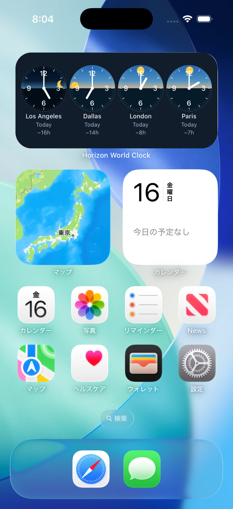

Sunrise, sunset & world time
World clock with
real-time sunrise & sunset animation
Watch the sun move with each city’s sunrise and sunset. Add widgets to keep as many cities as you like in view.
World time now
- Los Angeles —
- New York —
- London —
- Tokyo —
Interactive demo
One moment.
Four different skies.
Move through the day to watch four cities change together. Pick another date to compare the hours of daylight across seasons.
UTC
Local timeDaylight hoursSunrise / Sunset
-
Los Angeles——
-
New York——
-
London——
-
Tokyo——
The bars show one UTC day. Sunrise and sunset are calculated for the displayed local date. The sun and moon show progress through day and night.

iPhone app & widgets
Your cities.
One glance.
Keep family, teammates, and your next destination in view. Pick from 247 cities and regions, then add widgets to see the local time and daylight in more places at once.
- A different set on each widget
- Each widget shows four cities. Add separate groups for work, family, or travel.
- Follow the changing seasons
- Sunrise and sunset follow the city and date. Use the in-app motion preview to explore how the day changes with the seasons.
A little more of the world, at a glance.
The current app is free to download and includes a 7-day trial of all features.
Subscription pricing
- Japan
- ¥190
- Outside Japan
- US$1.49